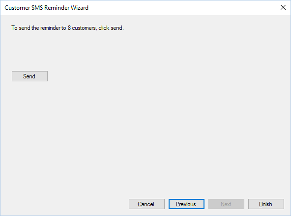

During step 3, the final step, messages will be sent to customers. The wizard will tell you how
many messages will be sent. To send the reminder alters click send.

A reminder alert can only be sent once, for each appointment. Once a message has been sent you
cannot send another.
You can check whether a notification has been sent or not by hovering over the appointment
within the diary, it will either say “Reminder sent” or “Reminder not sent”.